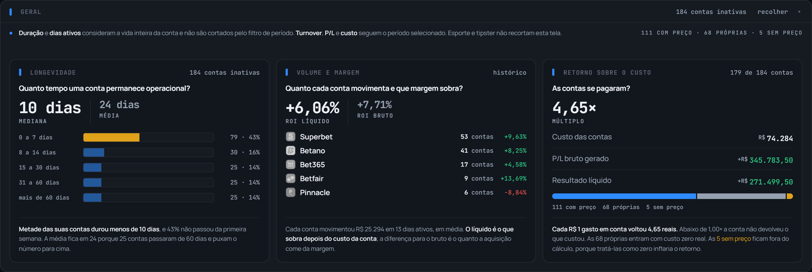
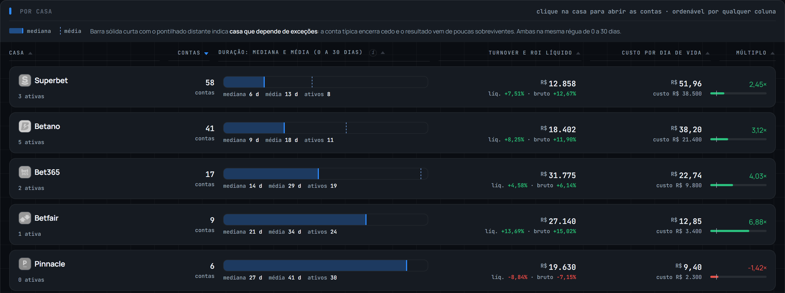
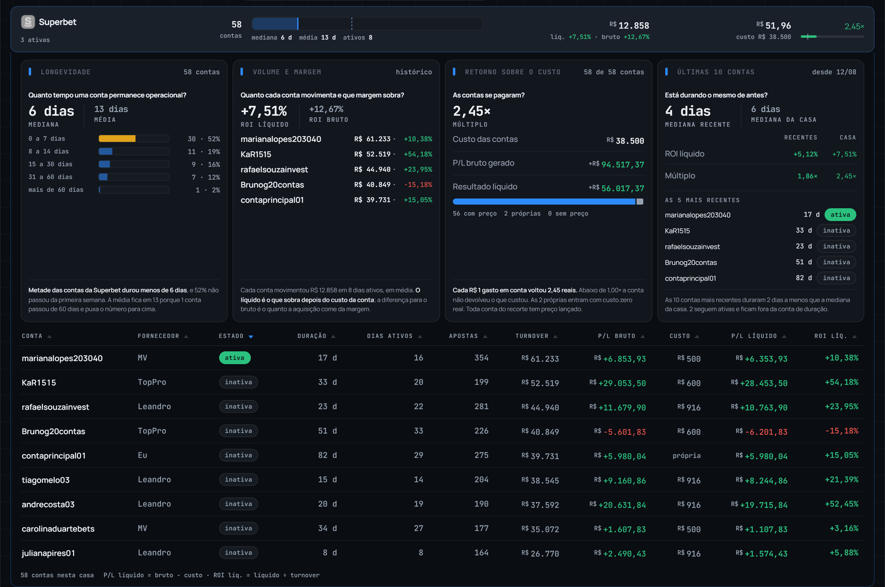

Quanto tempo as suas contas duram em cada casa, quanto cada uma gira, e se o que você pagou por elas voltou. Aqui a unidade é a conta, não a aposta: Bookies mede o resultado de uma casa; esta tela mede a vida de cada conta dentro dela.

A mediana, a média e a faixa onde as suas contas morrem. Metade durou menos de 10 dias, e 43% não passou da primeira semana.
ROI líquido e bruto lado a lado. A diferença entre os dois é o quanto a aquisição come da margem.
Cada R$ 1 gasto em conta voltou 4,65 reais. Abaixo de 1,00× a conta não devolveu o que custou.

A parte sólida é a mediana; o tracinho é a média, as duas na mesma escala de 0 a 30 dias. Sólida curta com o tracinho longe significa casa que depende de exceções: a conta típica encerra cedo e o resultado vem de poucas sobreviventes.
Contas, duração, turnover, custo por dia de vida e múltiplo. Clique na casa para abrir as contas dela.

O histórico não representa o momento. Este quadro põe as suas 10 contas mais recentes contra a média histórica da casa. Aqui elas estão durando 4 dias contra 6: a casa está limitando mais rápido do que costumava.
Depois delas vêm as inativas, da última que foi limitada para a primeira. Duração, dias ativos, apostas, turnover, P/L bruto, custo, P/L líquido e ROI líquido, conta por conta.
Duração e dias ativos não são cortados pelo filtro de período, porque a vida de uma conta não cabe dentro de um mês; turnover, P/L e custo seguem o período que você escolher. Conta própria entra com custo zero, que é verdade, e conta sem preço lançado fica fora do retorno, porque tratá-la como zero inflaria o resultado.
sharpen.bet · Gestão > ContasNomes de conta e de fornecedor são fictícios.